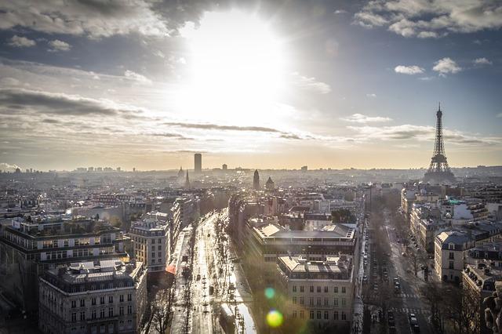
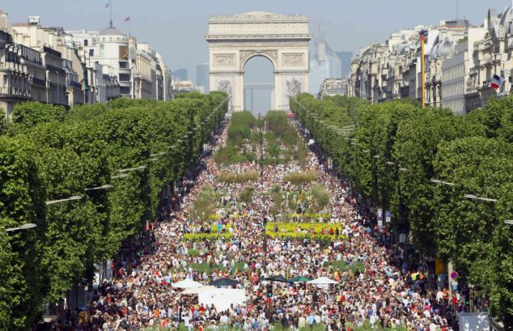

Paris, the cosmopolitan capital of France, is one of the largest agglomerations in Europe, with 2.2 million people living in the dense, central city and almost 12 million people living in the whole metropolitan area. Located in the north of France on the river Seine, Paris has the reputation of being the most beautiful and romantic of all cities, brimming with historic associations and remaining vastly influential in the realms of culture, art, fashion, food and design. Dubbed the City of Light (la Ville Lumière) and Capital of Fashion, it is home to the world's finest and most luxurious fashion designers and cosmetics, such as Chanel, Dior, Yves Saint-Laurent, Guerlain, Lancôme,L'Oréal, Clarins, etc. A large part of the city, including the River Seine, is a UNESCO World Heritage Site. The city has the second highest number of Michelin restaurants in the world (after Tokyo) and contains numerous iconic landmarks, such as the world's most visited tourist site the Eiffel Tower, the Arc de Triomphe, the Notre-Dame Cathedral, the Louvre Museum, Moulin Rouge, and Lido, making it the most popular tourist destination in the world with 45 million tourists annually.